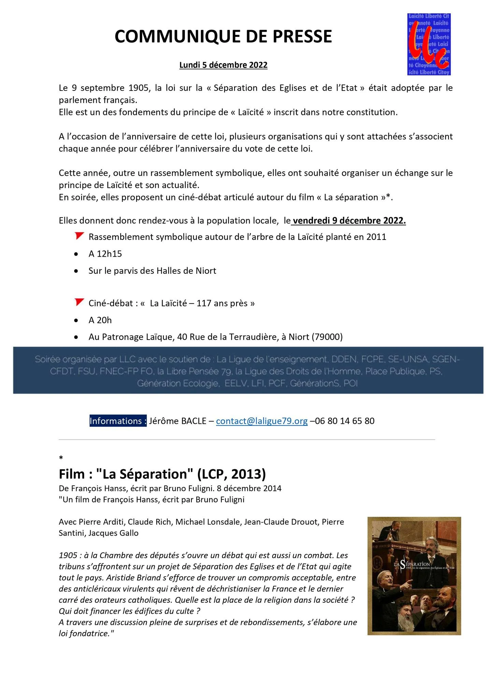

Publication d’archives
La Laïcité...117 ans plus tard
Date indiquée par Facebook · 9 décembre 2022
Texte conservé avec la publication
Contexte du dossier
Les publications des 20 et 25 octobre critiquent l’usage du 49.3 dans les débats budgétaires. La seconde reproduit un article de Julia Hamlaoui dans L’Humanité, avec les réactions de la gauche et ses alternatives pour la santé, les minima sociaux et l’autonomie des jeunes. L’enjeu est aussi démocratique : que reste-t-il du débat si l’exécutif choisit seul les amendements conservés ? Le 9 décembre, la page signale deux rendez-vous niortais autour des 117 ans de la laïcité. Ces invitations prolongent, sur un autre terrain, l’exigence d’une République où chacun peut débattre, croire ou ne pas croire et exercer ses droits.

Sources
Archive rouge · export Facebook · AR-0002-FB-01798
À lire aussi · Après les 49.3, la riposte de l’opposition